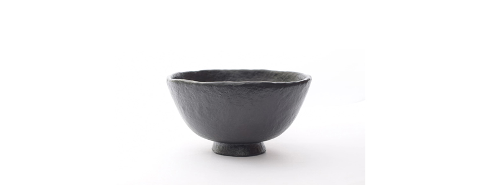
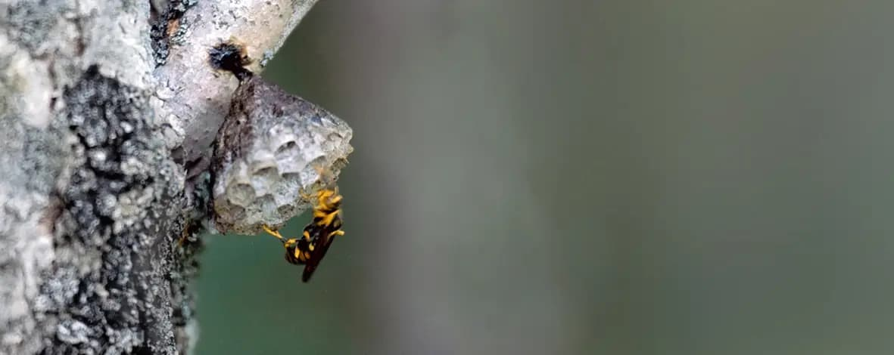
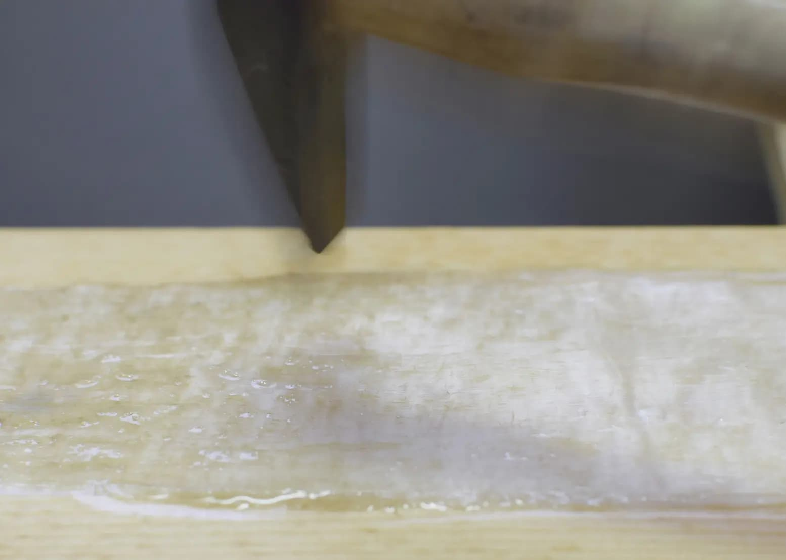
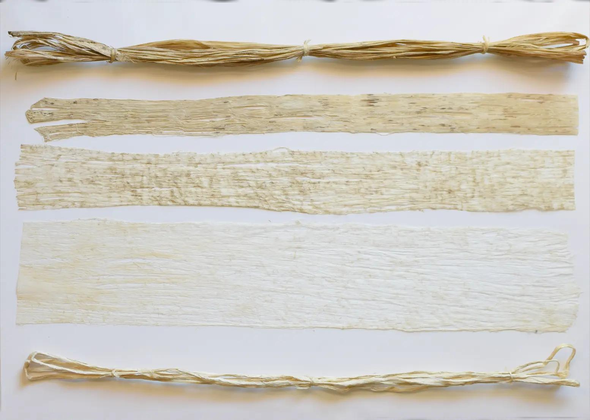

あらそわん: Chapter 2 Article 9.
(上：2017年) (下：2018年) 各 ￥3,190,000 税込 (作品本体価格￥2,900,000)
コンセプト:「あらそわん」の思想と背景
1. 命を宿す「器」としての巣
-
お椀にそっくりな形をしたアシナガバチの巣は、樹皮の繊維（靭皮繊維）に唾液などを混ぜて作られます。時にはウルシの樹液が含まれることもあり、まさに「漆と植物繊維」から成る強固な器です。わずか数ヶ月という短い一生を懸命に生きる蜂たちが、次世代の命を育むために一度きり作り上げるこの巣は、いわば「生の拠点」といえます。
2. 道具の宿命：殺傷から慈しみへ
-
一方で、漆の優れた接着力や耐水性は、古来より弓や矢尻などの武器に転用されてきました。本来、命を育むための素材が、人間の手によって「殺傷の道具」として発展した歴史があります。しかし、道具の価値は使う者の目的に委ねられています。蜂が命を守るために漆を使うように、私たちもこの自然の恵みを、争いではなく平和のために用いる。それが漆の「平和利用」という理想です。
3. 「あらそわん」に込めた不戦の誓い
この理想を形にしたのが、作品「あらそわん（荒麻椀）」です。
-
素材: 「あらそ（大麻の繊維）」という古来の素材名。
-
不戦: 日本国憲法第9条が掲げる「争わん（あらそわん）」という決意。
-
作品本体価格: この信念を象徴し、第2章第9条にちなんで「290万円」としています。
この思想の根底には、満州生まれの父から幼少期に繰り返し説かれた、平和への教えが深く根を張っています。
4. 制作の原点と継承
自然の理に適った制作技法は、薬品を使わずに繊維を取り出し、浄法寺漆のみを混入して造形する、蜂の巣作りに倣ったものです。こうした漆の性質や蜂の巣の存在については、恩師である人間国宝・田口善國先生より教示をいただきました。
その貴重な様子は、ポーラ伝統文化振興財団の記録映画『蒔絵ー田口善國のわざー』でも見ることができます。[1]
仕様
普段使い
-
毎日、普通にあるもの。
じゃぶじゃぶと漆を使い、じゃぶじゃぶと洗って後片付けが出来るお椀 【 関連動画 】
日本国憲法(1947/05/03)
-
第2章「戦争の放棄」の条文
第9条【戦争の放棄、戦力及び交戦権の否認】
1.日本国民は、正義と秩序を基調とする国際平和を誠実に希求し、国権の発動たる戦争と、武力による威嚇又は武力の行使は国際紛争を解決する手段としては、永久にこれを放棄する。
2.前項の目的を達するため、陸海空軍その他の戦力は、これを保持しない。国の交戦権は、これを認めない。
技法
-
アシナガ蜂の巣作りと同じ技法。真麻の靭皮繊維を素材とし、それにウルシ樹液のみを混入して造形します。

生地
-
そ 【麻】[名]あさ。「あかそ(赤麻)」「かみそ・こうぞ(紙麻)」「すがそ(菅麻)」菅 (カヤ)「まそ(真麻)」大麻「やまそ(山麻)」からむし、など と複合して用いることが多い。
「あさ」という語もある外に、「を」という語もあり、この「そ」との間の関係は明確ではない。
チョマ（カラムシ）、イチビ（ボウマ）、コウマ（ジュート）、アマなどの植物とその靭皮繊維をさす。また、葉から繊維をとる単子葉類のマニラアサ、サイザルヘンプ、モーリシャスアサ、ニュージーランドアサなどとその組織繊維も広い意味でのアサに含まれる。
日本国語大辞典 第二版 第十一巻
発行 小学館
-
あらそう 粗苧 荒麻皮
-
大分県日田市大山地区で栽培されていた大麻の事[2]

-
薬品を使わずに靭皮繊維を取り出す工程
皮から繊維だけを取り出して漆をより吸い込ませる。「あらそ」とは荒い大麻の靭皮繊維の事を表す。


漆
-
浄法寺漆認証制度適合漆 盛漆 大森俊三・大森清太郎（日本うるし掻き保存会[3]会員）
2016関連記事
2018関連記事
-
この年に届いた生漆は、Garden Kew. Quin collection[4](1882年)に保管されている上質の漆と目視による同等品質。
採取年度 技術者、樹種で樽ごとに品質が違う。
詳細
|
税込み価格
|
￥3,190,000
|
|
本体価格
|
￥2,900,000
|
|
サイズ
|
根来 黒無地 直径12,4cm 高さ6,4cm
|
|
ご相談と申し込みはこちらから
|
|
関係資料
岩手県浄法寺漆生産組合旧ラベル[5]
東京文化財研究所 粗苧
文化庁 文化遺産オンライン
備考
1996
|
粗苧製造 文化庁選定保存技術の指定
|
2008
|
浄法寺漆認証制度発足
|
2016
|
粗苧製造 選定保存技術の指定解除[6] |
2020
|
ユネスコ無形文化遺産[7]に日本文化財漆協会、日本うるし掻き保存会が認定される[8]
|
TOP